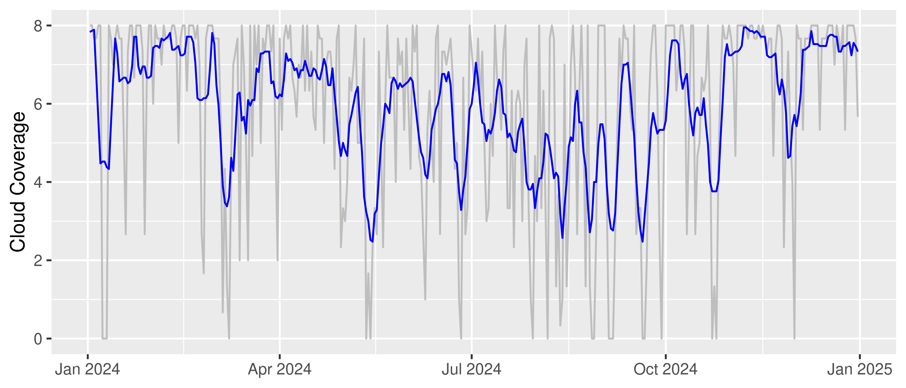

{kind=link}
url <- "https://opendata.dwd.de/climate_environment/CDC/observations_germany/climate/subdaily/cloudiness/historical/"
stations_file <- "N_Terminwerte_Beschreibung_Stationen.txt"
if (!file.exists("data")) {
dir.create("data")
}
if (!file.exists(paste0("data/", stations_file))) {
download.file(paste0(url, stations_file), here(
"data", stations_file
), mode = "wb")
}This is an example of how to create an animated visualization of spatial data using R. The data is sourced from the German Weather Service (Deutscher Wetterdienst, DWD) and includes cloud coverage and density observations from various weather stations across Germany.
Load the stations data
Here we will download the stations data from the DWD website. The data contains information about weather stations, including their IDs, names, locations, and the time period they were active.
Let’s read the stations data.
col_names <- c(
"STATIONS_ID", "von_datum", "bis_datum", "Stationshoehe", "lat",
"lon", "Stationsname", "Bundesland", "Abgabe"
)
stations <- read.fwf(
here(
"posts", "20250704-animation", "data",
"N_Terminwerte_Beschreibung_Stationen.txt"
),
widths = c(6, 9, 9, 15, 12, 10, 41, 41, 5), skip = 2,
fileEncoding = "Windows-1252", col.names = col_names
) |> as.data.table()
stations[, von_datum := as.Date(str_trim(von_datum), format = "%Y%m%d")]
stations[, bis_datum := as.Date(str_trim(bis_datum), format = "%Y%m%d")]
stations[, lon := as.numeric(lon)]
stations[, lat := as.numeric(lat)]Read the links to the data files
We will read the HTML content of the DWD website to extract the links to the cloudiness data files. The links will be filtered to include only those that contain the term “terminwerte”.
page_content <- read_html(url)
links <- page_content |>
html_nodes("a") |>
html_attr("href")
links <- links[!is.na(links) & str_detect(links, "terminwerte")]
links <- links |> data.table()
links |> head() links
<char>
1: terminwerte_N_00001_19370101_19860630_hist.zip
2: terminwerte_N_00003_18910101_20110331_hist.zip
3: terminwerte_N_00044_19710301_20111231_hist.zip
4: terminwerte_N_00052_19730101_20011231_hist.zip
5: terminwerte_N_00061_19750701_19780831_hist.zip
6: terminwerte_N_00070_19730601_19860930_hist.zipExtract the station IDs from the links. The station IDs are 5-digit numbers that are part of the file names.
links[, STATIONS_ID := str_extract(links, "[0-9]{5}")]
links[, STATIONS_ID := as.integer(STATIONS_ID)]Filter the stations data
We will download only those stations data that were active during the period from 2015 to 2025.
stations <- stations[von_datum <= "2023-12-01" & bis_datum >= "2025-01-01"]
links <- links[stations, on = "STATIONS_ID"]Download and process the data files
In this section, we will download the data files from the DWD website and process them to extract the cloud coverage and density observations. The data will be stored in a DuckDB database which is useful if we need to reuse the data later without downloading and parsing it again.
# check if the files exist
files <- list.files("data", full.names = TRUE)
files <- files[str_detect(files, "produkt_n_termin")]
if (length(files) == 0) {
for (link in links$links) {
download.file(paste0(url, link), here(
"posts", "20250704-animation", "data", link
), mode = "wb")
unzip(paste0("data/", link), exdir = "data")
unlink("data/Metadaten*")
unlink("data/*.html")
}
}
unlink("data/*.zip")Here is where parsing is done.
con <- dbConnect(duckdb(),
dbdir = here("posts", "20250704-animation", "db", "weather.duckdb")
)
tables <- dbGetQuery(con, "SHOW ALL TABLES;")["name"]
if (!("cloudiness" %in% tables)) {
files <- list.files("data", full.names = TRUE)
files <- files[str_detect(files, "produkt_n_termin")]
start_date <- "2023-12-01"
observations <- data.table()
for (file in files) {
temp_data <- read.csv(file, sep = ";") |> as.data.table()
temp_data[, MESS_DATUM := as.Date(str_trim(MESS_DATUM), format = "%Y%m%d")]
temp_data <- temp_data[MESS_DATUM >= start_date]
observations <- rbind(
observations,
temp_data
)
}
observations <- observations[N_TER != -999]
observations[, CD_TER := ifelse(CD_TER == -999, NA, CD_TER)]
if (!file.exists("db")) {
dir.create("db")
}
con <- dbConnect(duckdb(),
dbdir = here(
"posts", "20250704-animation", "db", "weather.duckdb"
)
)
dbWriteTable(con, "cloudiness", observations, overwrite = TRUE)
}
observations <- dbGetQuery(con, "SELECT * FROM cloudiness") |> as.data.table()
dbDisconnect(con)
observations |> glimpse()Rows: 231,108
Columns: 6
$ STATIONS_ID <int> 4024, 4024, 4024, 4024, 4024, 4024, 4024, 4024, 4024, 4024…
$ MESS_DATUM <date> 2023-12-01, 2023-12-01, 2023-12-01, 2023-12-02, 2023-12-0…
$ QN_4 <int> 9, 9, 9, 9, 9, 9, 9, 9, 9, 9, 9, 9, 9, 9, 9, 9, 9, 9, 9, 9…
$ N_TER <int> 4, 5, 8, 8, 8, 8, 8, 7, 8, 8, 8, 8, 7, 8, 8, 8, 7, 8, 8, 8…
$ CD_TER <lgl> NA, NA, NA, NA, NA, NA, NA, NA, NA, NA, NA, NA, NA, NA, NA…
$ eor <chr> "eor", "eor", "eor", "eor", "eor", "eor", "eor", "eor", "e…As the data contains multiple observations per day for each station, we will aggregate the data to get the average cloud coverage and density per day per station.
observations <- observations[, .(
.N,
cloud_coverage = mean(N_TER, na.rm = TRUE),
cloud_density = mean(CD_TER, na.rm = TRUE)
), by = c("STATIONS_ID", "MESS_DATUM")]Let’s plot the cloud coverage for a specific station as a time series to visualize the data.
observations[MESS_DATUM > "2024-01-01" & STATIONS_ID == 433] |>
ggplot(aes(x = MESS_DATUM, y = cloud_coverage)) +
# geom_line() +
geom_line(aes(y = rollapply(cloud_coverage,
width = 7, FUN = mean, align = "center", partial = TRUE
)), color = "blue") +
labs(title = NULL, x = NULL, y = "Cloud Coverage") +
theme_minimal()
Add H3 addresses
To visualize the data on a map, we will convert the latitude and longitude coordinates of the stations into H3 addresses. H3 is a geospatial indexing system that allows us to represent geographic locations as hexagonal cells.
points <- stations[, .(lon, lat)] |> unique()
points[, h3_address := point_to_cell(points, res = 4)]Assuming columns 1 and 2 contain x, y coordinates in EPSG:4326stations <- stations[, c(
"STATIONS_ID", "von_datum", "bis_datum", "Stationshoehe",
"lat", "lon", "Stationsname", "Bundesland", "Abgabe"
)]
stations[points, on = .(lon, lat), h3_address := h3_address]
stations <- stations[, geometry := cell_to_polygon(h3_address, simple = F)[2]]Load the boundaries of Germany to use as a background for the map.
boundaries <- geoboundaries("Germany", release_type = "gbOpen", adm_lvl = "adm1")Join the stations data with the observations data to have the geometry of the stations in the observations data. Calculate mean for each H3 address and drop duplicates.
observations <- observations[stations, on = "STATIONS_ID"]
observations[, coud_coverage := mean(cloud_coverage, rm = T), by = h3_address]Warning in `[.data.table`(observations, , `:=`(coud_coverage,
mean(cloud_coverage, : Unable to optimize call to mean() and could be very
slow. You must name 'na.rm' like that otherwise if you do mean(x,TRUE) the TRUE
is taken to mean 'trim' which is the 2nd argument of mean. 'trim' is not yet
optimized.observations <- observations |> unique(by = c("h3_address", "MESS_DATUM"))Create animations of cloud coverage in Germany
In the following section, we will create animations of cloud coverage in Germany using the observations data in 2024. This code creates a series of maps showing the average cloud coverage for each day in 2024, with a rolling average of 7 days to smooth the data.
min_date <- observations[, MESS_DATUM] |> min(na.rm = TRUE)
max_date <- observations[, MESS_DATUM] |> max(na.rm = TRUE)
min_date <- max(c(min_date, as.Date("2024-01-01")))
max_date <- min(c(max_date, as.Date("2024-12-31")))
max_coverage <- observations[(MESS_DATUM >= min_date) &
(MESS_DATUM <= max_date), cloud_coverage] |> max(na.rm = TRUE)
min_coverage <- observations[(MESS_DATUM >= min_date) &
(MESS_DATUM <= max_date), cloud_coverage] |> min(na.rm = TRUE)
table_dates <- seq(min_date - 7, max_date + 7, by = 1) |>
as.data.table() |>
rename(MESS_DATUM = V1)
observations <- table_dates[observations, on = "MESS_DATUM"]
observations[, cloud_coverage_r7 := rollapply(cloud_coverage,
width = 7, FUN = mean, align = "center", partial = TRUE
),
by = STATIONS_ID
]
dates <- seq(min_date, max_date, by = 1)
if (!file.exists("figures")) {
dir.create("figures")
}
for (d in as.character(dates)) {
p <- ggplot(aes(fill = cloud_coverage_r7),
data = observations[MESS_DATUM == d] |> as.data.frame()
) +
geom_sf(data = boundaries, fill = "gray78", color = "gray54") +
geom_sf(aes(geometry = geometry), color = "gray78") +
scale_fill_whitebox_c(
palette = "deep",
direction = 1,
limits = c(min_coverage, max_coverage)
) +
coord_sf(default_crs = sf::st_crs(4326)) +
theme_void() +
theme(
legend.position = "bottom",
legend.key.height = unit(4, "pt"),
legend.key.width = unit(20, "pt"),
legend.title.position = "top",
panel.grid.minor = element_blank(),
panel.grid.major = element_blank(),
plot.background = element_rect(fill = NA, color = NA),
title = element_text(size = 8, color = "gray35")
) +
labs(title = d, fill = "Cloud Coverage")
ggsave(
here(
"posts", "20250704-animation", "figures",
paste0("cloudiness-", d, ".png")
),
plot = p,
units = "px",
width = 1200,
height = 1200,
dpi = 300
)
}Create a GIF animation
Finally, we will create a GIF animation from the generated PNG files. The GIF will show the cloud coverage in Germany over the course of 2024, with each frame representing a day.
png_files <- list.files(
here("posts", "20250704-animation", "figures"),
full.names = TRUE, pattern = "cloudiness.+\\.png"
) |>
sort() |>
as.character()
gif_file <- here(
"posts", "20250704-animation", "animation-cloudiness.gif"
)
gifski(png_files, gif_file, width = 1200, height = 1200, delay = 0.1, loop = TRUE)[1] "/mnt/Projects/Blog/posts/20250704-animation/animation-cloudiness.gif"unlink(here("posts", "20250704-animation", "figures", "cloudiness*"))
The resulting GIF animation shows the cloud coverage in Germany for each day in 2024, with a rolling average of 7 days to smooth the data. The animation provides a clear visual representation of how cloud coverage changed over time across different regions in Germany.
Source code available in the repository: Animations-in-R